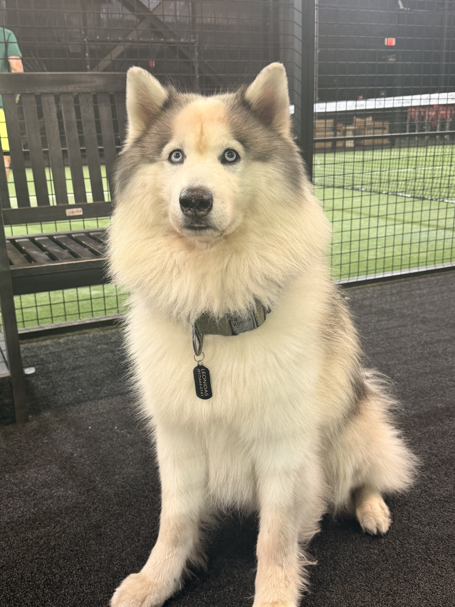

When the science feels scattered, start here. Explore peptide biology through the
health concerns that matter to dogs, cats, and the people who care for them.
Independent education only. Your veterinarian stays in charge of care.
01 Built for pet owners
02 Evidence, clearly labeled
03 Veterinary safety first
04 No miracle claims

12 years young
Leonidas, the dog behind the name.
Our story
Meet Leonidas.
Leonidas has been by my side for twelve years. On paper, he is a senior husky. In real
life, nobody seems to have told him.
He still runs around like a puppy, stays curious, and has shown remarkably few of the
visible slowdowns people expect with age. Watching him keep that spark made me want to
understand more about how animals age, recover, and preserve their quality of life.
“His energy did not give me an answer. It gave me a better question.”
That curiosity became Young Leonidas: a place to explore peptide biology and pet-health
research without shortcuts, miracle language, or pretending that early science is
settled veterinary care.
Leonidas’s story is personal experience, not evidence of a treatment or proof that any
intervention can reproduce his health or vitality.
Start with the system or change you want to understand.
02
Read the evidence
Separate established biology from early or unsupported claims.
03
Talk with your veterinarian
Use what you learn to prepare clearer, safer questions.
Interactive health atlas
Start with the animal, not the compound.
Choose a species and explore the biological systems where peptide research is being
discussed. The experience begins with physiology, evidence, and limitations.
Peptide library
Research dossiers, without the hype.
Each profile separates mechanism, veterinary context, evidence quality, and open
questions. No protocols, product claims, or human-to-pet assumptions.
Young Leonidas is being built as an education platform before it becomes a shop.
Clear evidence, transparent boundaries, and veterinary context will remain part of
every future product conversation.
Five questions that define how this site approaches pet peptide research.
Is this veterinary advice?+
No. Young Leonidas provides general education and cannot diagnose, treat, or make decisions for an individual animal. Your veterinarian remains responsible for clinical care.
Do you currently sell pet peptides?+
No. The current site is an educational atlas and journal. Any future commerce will require separate product, legal, safety, and transparency standards.
Can human peptide research be applied to pets?+
Not automatically. Species differences can affect receptors, metabolism, pharmacology, risk, and clinical relevance. Human findings are context, not pet-care instructions.
How do you label evidence?+
We distinguish established veterinary biology, clinical evidence, preclinical research, human-only evidence, mechanism discussions, and unsupported claims.
Why do you avoid dosing and sourcing guidance?+
Because educational content should not become an invitation to self-treat an animal. Questions about medications, dosing, or treatment belong with a qualified veterinarian.
Our editorial standard
Veterinary context is not an optional footnote.
Every dossier distinguishes established veterinary use, preclinical research,
human-only evidence, and unsupported claims.